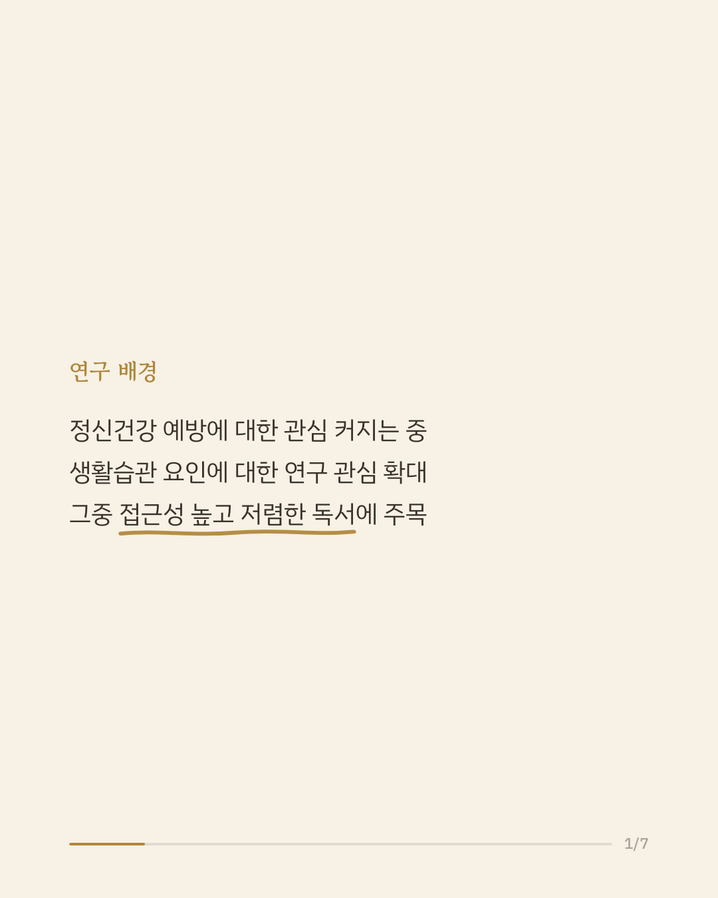
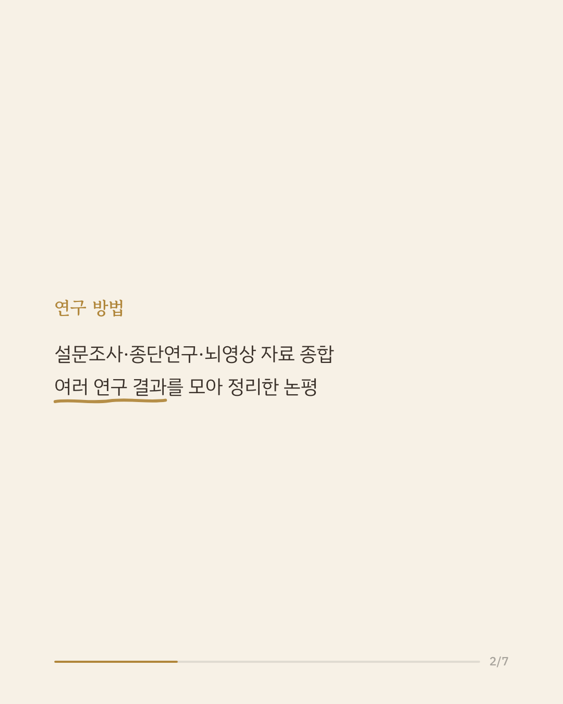
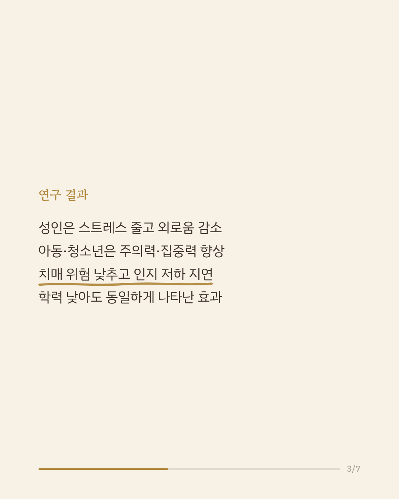
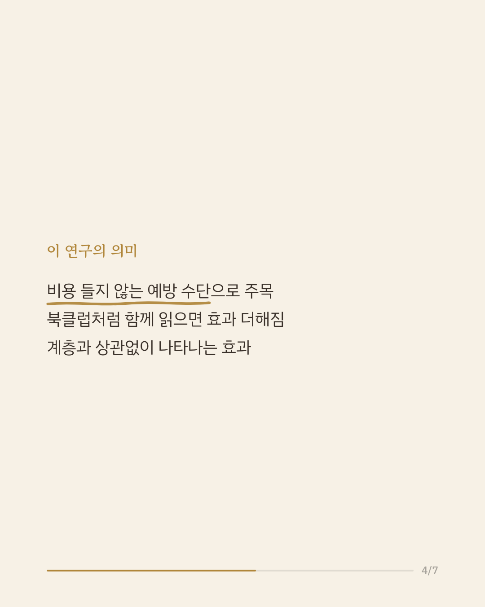
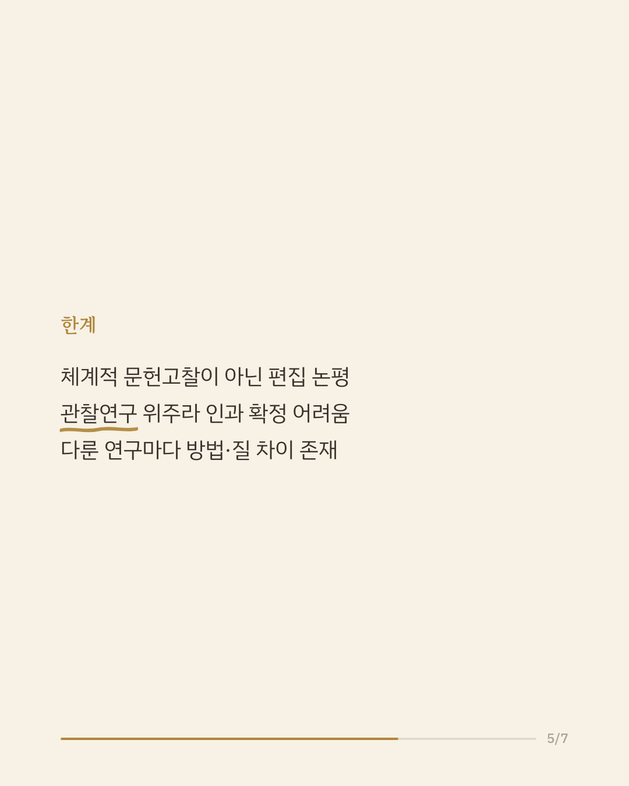
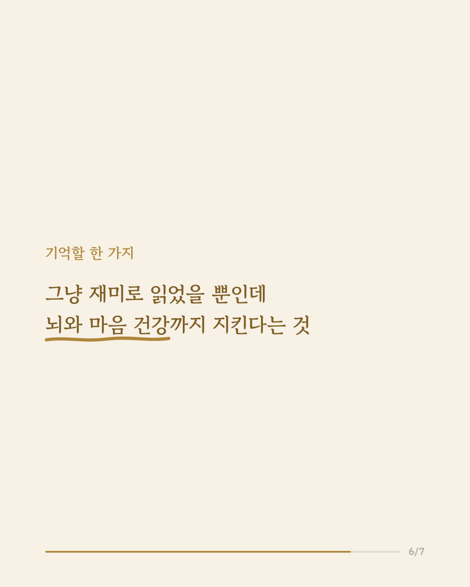
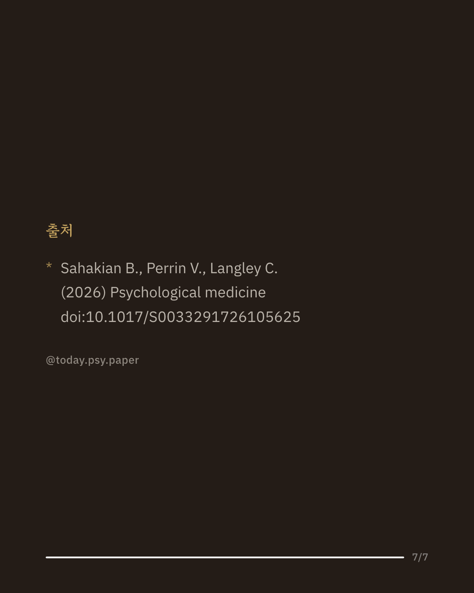

나이가 들수록 걱정되는 것 중 하나가 치매와 인지 기능 저하입니다. 최근 정신건강 예방에 대한 관심이 커지면서, 돈이 거의 들지 않고 누구나 실천할 수 있는 생활습관에 관심이 모이고 있습니다. 이번 편집 논평은 그중에서도 '재미로 읽는 독서'가 뇌와 마음 건강에 미치는 영향을 정리했습니다. 설문조사에서는 독서가 스트레스를 줄이고 공감 능력과 삶의 만족도를 높이며 외로움을 줄이는 것과 관련 있었습니다. 종단 연구에서는 독서 같은 지적 활동이 치매 위험을 낮추고 인지 저하 속도를 늦추는 것과 관련 있었으며, 이 효과는 학력 수준이 낮은 사람에게도 비슷하게 나타났습니다. 아동·청소년기에는 어려서부터 재미로 책을 읽은 경우 주의력, 기억력, 학업 성취가 더 좋고 정신건강 문제는 더 적은 경향을 보였습니다. 이 논평은 독서와 북클럽 참여가 큰 비용 없이도 널리 적용할 수 있는 예방 수단이 될 수 있다는 점을 시사합니다. 다만 여러 연구를 모아 정리한 편집 논평인 데다 대부분 관찰 연구를 근거로 하고 있어 인과관계를 확정하기는 어렵습니다. 단일 연구이므로 확대 해석은 조심해야 합니다. 출처: Psychological Medicine (2026), 'Reading and associations with brain health, cognition, well-being, and mental health' #임상심리 #정신건강정보 #독서습관 #인지건강
python3 publish.py 42735909